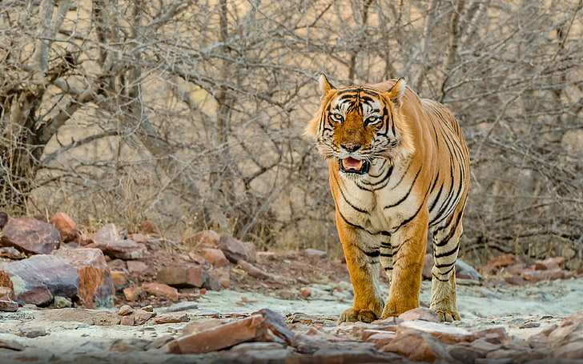

National parks in India
are International Union for Conservation of Nature (IUCN) category II protected areas. India's first national park was established in 1936, now known as Jim Corbett National Park, in Uttarakhand. In 1970, India had only five national parks. In 1972, India enacted the Wildlife Protection Act and Project Tiger in 1973 to safeguard the habitats of conservation reliant species and currently there are 106 national parks in India. Further legislation strengthening protection for wildlife was introduced in the 1980s.